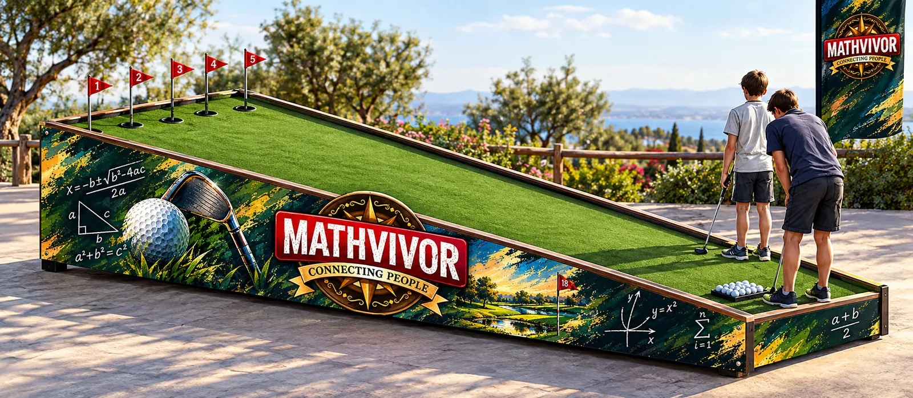

Kim lider?
Takıma yön veren, ilk adımı atan ve sorumluluğu üstlenen kim?
Testteki rol: Lider
Mathvivor, çalışanlarınız birlikte deneyimlerken, nasıl birlikte düşündüklerini takip edebileceğiniz bir platform olacaktır.
Ekipler süreyle yarışır, problemleri çözer, strateji oluşturur, görev paylaşır, baskı altında karar verir ve takım arkadaşlarının güçlü yönlerini kullanır. Mathvivor’un beş sembolü, bu anlara bakmak için beş ayrı pencere açar.
Oyunun kontrolü takımın elinde mi? Kararların ortak mı yoksa tek kişiden mi çıktığına, herkesin oyunda bir payı olup olmadığına bakın.
“Takım oyunu mu yönetiyor, oyun takımı mı?”
Fiziksel görevlerde takımın temposu, koordinasyonu ve enerjisi. Kim koşuyor, kim atıyor, kim yer değiştiriyor; hepsi aynı ritimde mi?
“Takım aynı ritimde hareket ediyor mu?”
Bilgi takımın içinde nasıl dolaşıyor ve karara nasıl dönüşüyor? Görülenin söylenip söylenmediğine, söylenenin dinlenip dinlenmediğine bakın.
“Bilen söylüyor mu, söylenen karara dönüşüyor mu?”
Skoru, kuralları ve rakibin son hamlelerini akılda tutabilmek. Oyun hızlandığında takımın odağını koruyup koruyamadığına bakın.
“Takım neyi hatırlıyor, neyi gözden kaçırıyor?”
Süre azalırken yönü kaybetmemek. Takımın zamanı nasıl kullandığına ve baskı altında rotasını koruyup korumadığına bakın.
“Saat ilerlerken takım hâlâ aynı hedefe mi koşuyor?”
Kim daha iyi çalışıyor değil, kim daha iyi takım oluyor, keşfedin. Oyun başladığında şu yedi soru sahada kendiliğinden cevap bulur.
“Takımınızı tanımak için toplantı salonundan çıkın.”
Takıma yön veren, ilk adımı atan ve sorumluluğu üstlenen kim?
Testteki rol: LiderHamleden önce tahtayı okuyan, rakibin planını çözen kim?
Testteki rol: AnalistSüre daralırken tereddüt etmeden hamleyi yapan kim?
Testteki rol: Hızlı Karar VericiGerginlik yükseldiğinde ortamı yumuşatan, takımı oyuna döndüren kim?
Testteki rol: Takımın SakinleştiricisiGördüğünü söyleyen, herkesin aynı resmi görmesini sağlayan kim?
Testteki rol: İletişimciSkor ve süre baskısı arttığında ritmini kaybeden kim? Bunu bilmek de takımı güçlendirir.
Testte yok, sahada görülürHerkes takıldığında yeni bir yol bulan kim?
Testteki rol: Çözüm ÜreticiAltı kısa sahne, her birinde dört seçenek. İçinden geleni seç; sonunda sahadaki rolünü söyleyelim.
Eğlence amaçlı bir ısınma testidir; bilimsel bir ölçme aracı değildir.
Isınma testini çözmek için tarayıcınızda JavaScript açık olmalı.
Kurumsal ekip çalışmalarında iletişim, problem çözme, iş birliği ve karar verme temel değerlerdir. Bunları toplantı salonunda değil, Mathvivor parkurunda birlikte deneyimleyin.